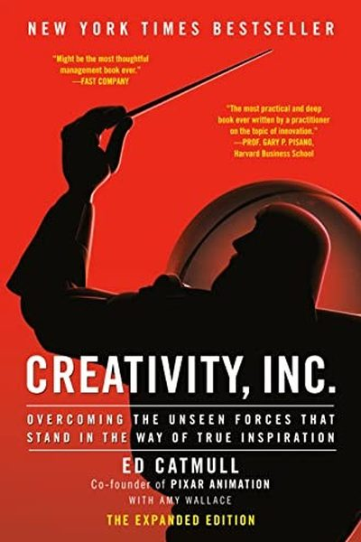

Library › Creativity
Creativity, Inc. — Summary & Key Lessons

The Pixar co-founder on building a workplace where creativity survives — and thrives — at scale.
📖 OPEN THE FULL INTERACTIVE BREAKDOWN →🌐 Read it in Hindi, Hinglish, Gujarati, Tamil & 22 more languages — free, with audio.
💡 The Big Idea
Ed Catmull, co-founder of Pixar, shares the management philosophy behind Toy Story, Finding Nemo and a streak of hits that no studio has matched. His thesis: creativity is not a mysterious spark but a team sport. Protect the process — candor, honest feedback, freedom to fail — and the quality follows. Managers kill creativity with fear, hierarchy and 'success sickness'; leaders protect it with trust, transparency and the Braintrust.
🧠 The 5 Key Lessons
Lesson 1: The Braintrust: Candor Saves Films
The Braintrust
Pixar's Braintrust is a group of trusted creatives who review every film in progress and give brutally honest notes — with no authority to force changes. The power lies in candor without hierarchy: anyone can say anything, and the filmmaker decides what to use. Fear of speaking up is the #1 creativity killer in companies.
📖 Example: Toy Story 2 was nearly a disaster; the Braintrust's blunt feedback forced a complete rewrite of the story mid-production. The film went on to be a global hit — because honest people said 'this isn't working' to each other's faces. Read the full example →
⚡ Do this: Build your own Braintrust: 3 people who will tell you the truth. When reviewing work, ask them 'What's not working?' before 'What do you like?'
Lesson 2: Ugly Babies Need Protection
Protecting the New
Every creative project is born ugly — a rough sketch, a bad first draft, a broken prototype. Judging it too early by final standards kills it. Catmull's rule: separate evaluation from development. Early work needs protection from the 'get it perfect now' instinct, both your own and others'.
📖 Example: The first Toy Story animations looked awful; early test footage made executives nervous. Instead of killing it, Pixar protected the ugly baby, kept iterating, and produced the first fully computer-animated feature film ever. Read the full example →
⚡ Do this: Pick your current 'ugly baby' project and shield it: no criticism allowed (yours included) until it reaches a milestone you define.
Lesson 3: Failure Is a Prerequisite, Not a Punishment
Fear and Failure
Trying something new means some things will fail — that is the tuition for innovation. Catmull insists that fear of failure makes people hide problems, and hidden problems grow into disasters. When failure happens, the goal is to learn loudly and share the lesson, not to find someone to blame.
📖 Example: After a massive technical setback on Toy Story 2 — the film was accidentally deleted and only saved by a backup on one employee's home computer — Pixar didn't fire anyone; it built better systems and made 'postmortems' a sacred ritual. Read the full example →
⚡ Do this: Run a 15-minute postmortem on your last failure: What happened? What did we learn? Write the lesson where your team can see it.
Lesson 4: Candor Beats Hierarchy
Honesty
In most companies, people say what their boss wants to hear — and the truth dies quietly. Catmull fought this with mechanisms: everyone, regardless of rank, can flag problems; status is set aside in reviews; and 'no idea is anyone's property' during critique. The best idea wins, not the loudest title.
📖 Example: During story reviews, junior artists routinely challenge directors in front of the whole team — because the culture explicitly rewards it. Catmull notes the alternative: a culture where people nod, and the product silently rots. Read the full example →
⚡ Do this: In your next review, ask the most junior person first. Then thank whoever disagrees with you — out loud.
Lesson 5: Beware Success Sickness
The Success Trap
Success is dangerous: it breeds complacency, risk-aversion and the belief that your old formula is a law of nature. Catmull calls this 'success sickness.' The antidote is relentless curiosity — asking what could kill you, studying your own failures, and treating every new project as a new problem to solve.
📖 Example: After years of hits, Pixar's Cars 2 underperformed critically. Instead of doubling down, leadership held painful postmortems and changed how sequels were developed — the honest reckoning produced new classics like Inside Out. Read the full example →
⚡ Do this: Ask your team (or yourself) quarterly: 'If we were starting today, what would we do differently?' Write down three answers and act on one.
✅ 5-Step Action Plan
- Assemble your Braintrust — three people who will tell you the truth.
- Protect one ugly early-stage project from premature judgment.
- Run a postmortem on a recent failure and share the lesson publicly.
- In your next meeting, make the most junior voice speak first.
- Ask the 'starting today' question quarterly — and act on one answer.
⚠️ When This Doesn't Work
Catmull's 'candor is safe' culture worked at Pixar because the leaders genuinely protected it. Boeing copied the language — psychological safety, open feedback — while the culture trade with McDonnell Douglas quietly made honesty dangerous, and two 737 MAX crashes were the cost. A candor culture is not a statement or an org chart; it's what happens when someone criticises the boss and nothing bad happens. If you can't guarantee that, don't hold the feedback session — you're building a Boeing poster.
💀 The Graveyard Proves It
🛫 Boeing's Culture Trade — When the Accountants Bought the Engineers. Burn: $20B+, 346 lives, a century of trust. Read the full case study →
💬 Best Quotes from Creativity, Inc.
- “If you give a good idea to a mediocre team, they'll screw it up. If you give a mediocre idea to a great team, they'll either fix it or throw it away.”
- “Failure isn't the opposite of success; it's a prerequisite for success.”
- “Getting the team right is the necessary precondition.”
Interactive version: mark lessons as read, listen in your language, share quote cards.